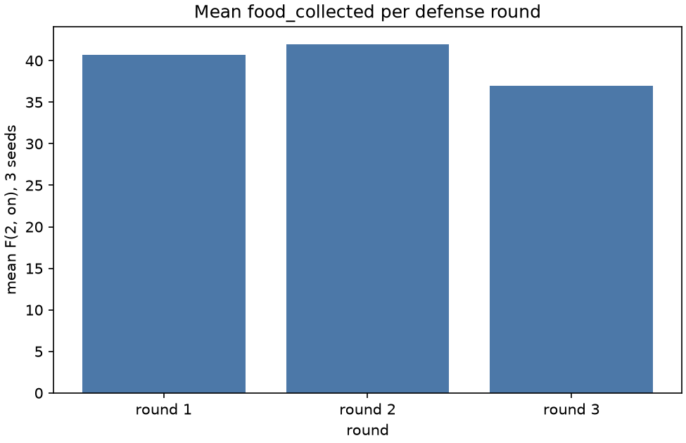

Stage report, step 2 of 6. Back to summary
| What | Up to 3 rounds at d = 2, defense on, seeds 101 to 103. Pick the round with the highest mean food. |
|---|---|
| Why | The defense values freeze before the 80-run sweep. Tuning on sweep seeds would fit the result. |
| Input data | Real runs, d = 2, defense on, seeds 101 to 103 (runs/defense_tuning/). |
| Output data | results/real/defense_tuning/defense_pick.json. |
| Result (numbers) | picked round 2: r_suspect 0.4, alpha_cone_deg 10, d_cone 1, t_end 15. |
| Result (good or bad) | Good: round 2 has the highest mean. |
| Status | ran |
Figure and table

| round | r_suspect | alpha_cone_deg | d_cone | t_end | food by seed | mean food |
|---|---|---|---|---|---|---|
| 1 | 0.4 | 15 | 1 | 15 | 101: 37, 102: 52, 103: 33 | 40.67 |
| 2 | 0.4 | 10 | 1 | 15 | 101: 29, 102: 58, 103: 39 | 42.00 |
| 3 | 0.4 | 10 | 0.5 | 15 | 101: 35, 102: 45, 103: 31 | 37.00 |